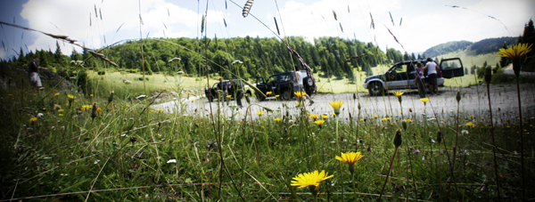
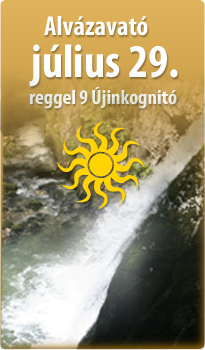

1.nap
Felkerekedünk Debrecenből, terepjárókkal.
Egy jó fertály órán belül Nagyvárad.
Újabb óra Vasaskőfalva, a hegy lábánál.
Leérünk a Boga völgyébe, innen kis izgalom, s már a szálláson vagyunk.
Kipakolás, kávé, sör.
Irány a Három Királyok vízesés.
Ha egyáltalán visszaérünk, vacsora.
Vigyorgós est, muzsika, cujka... |
2.nap
Lefekvés (szabadprogram).
Kávé, reggeli, kávé, reggelikávé.
Csodavár, (barlangtúra),
Galbena szikla, Eszkimó jégbarlang
Este vissza a szállásra, éhség, fáradtság.
Vacsora.
Vigyorgós est, muzsika, cujka... |
3.nap
Lefekvés (szabadprogram)
Kávé, reggeli, kávé, reggelikávé.
Szamos bazár barlangja.
Ebéd a szabadban.
Galbena szurdok, Eminenciás vízesés, Medvebarlang.
Hazaút.
 |

Mit hozzunk az útra, és egyebek
Ruházat:
Kényelmes könnyű túracucc, váltás száraz ruha mindig kellhet, hiszen ez a karsztvidék Erdély egyik legcsapadélosabb tája. A cipő nagyon fontos, kényelmes legyen, könnyű és mérsékelten csússzon. Kis hátizsák, amibe a napi víz, és pár szendvics elfér. Könnyű esőkabát. Fontos, hogy minden napra legyen váltás cipő, ha elázna. Az, hogy mennyi meleg cucc kell, nem jósolható. 1500 méternél sosem vagyunk magasabban.
Technika:
Aki gondolja hozhat walkietalkie-t, a mi rádióink is a pmr sávokra vannak hangolva. Sosem árt, ha tudjuk ki hol van. Zseblámpa feltétlen, fejlámpa ha van nembaj. Kamerából, fényképezőből a strapabíróbb könnyebb darabok célszerűek.
Ellátás:
Napközben csokin és szendvicsen élünk, ezért nem árt kalóriadús, könnyű napközbeni rágcsáról gondoskodni. A többi a mi dolgunk.
Menü: marhapörkölt, csorba leves, hurka, sült oldalas, túróscsusza, pároltkáposzta, juhtúrós guba, vagy még egy jó korhelyleves, ha jó az idő, egy flekkenezés micssütéssel. Reggel a Bihar hegység legváltozatosabb tükörtojáskínálata. Természetesen gondolunk a vegetáriánusokra is, de kérem ezt előre jelezzétek, hogy úgy tudjunk készülni.
Szállás:
Minden este meleg szoba és meleg étel várja a társaságot egy kényelmes magánszálláson. Nagyobb létszám esetén (15 fő felett) szállásunk egy teljesen felszerelt (étterem, szauna, bár) panzió.
Utazás:
Debrecenből indulunk terepjárókkal. Szükség szerint 5 autóval tudunk indulni. Mindegyik szálláshelyünk megközelíthető személyautóval is, ha valaki ragaszkodik az önálló utazáshoz, azonban már útközben sem feltétlen követjük az aszfaltcsíkot. Előfordulhat, hogy
kitérünk a Dragan völgy felé, vagy a Prislop hágón keresztül indulunk vissza. Ezek az utak nem személyautóknak valók, mint ahogy a napi túrák sem, ahol erősen terheljük a futóműveket. |
| |
| |
|

"Ma nem igazán tudtam a munkára koncentrálni, szóval máris megérte ez a kis kiruccanás Erdélybe!
Nagyon kösz és tényleg jók vagytok.
Nekem az jött be, hogy sikerült letűrnöm bizonyos korlátokat, másra nem nagyon volt idő, pl beszélgetni veletek…."
|
"Sokat beszélgetünk a történtekről, még mindíg hatás alatt állunk. Többen megéltük azt, hogy péntek, szombat délelőtt vettük volna a cipőt, indultunk volna a hegynek. Esténként pedig hiányzott a társaság. Mint gyermekkorunkban, egy-egy jó tábor után."
|
| |
|